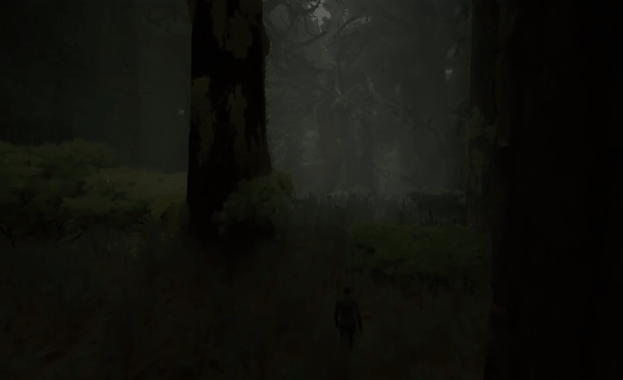

Artículos
Facciones

Las Almas Libres (antes conocidas como los Verdanos) son la estirpe originaria del mana natural, compuesta por Goblin, Elfo del Bosque, Orco, Hobgoblin, Lizardfolk y Bugbear. Unidos por su vínculo sagrado con el cuerpo de Loker Gamora, el Titán de la Vida —la tierra y la naturaleza misma—, construyeron aldeas de madera trenzada y templos de cristal vegetal. Su comunión con la naturaleza dio lugar a prósperos clanes druidas, protectores de cada rincón del continente.
por Kendry